3 Introdução às Séries Temporais
3.1 O que são Séries Temporais ?
Definição: Entende-se por Séries Temporais (ST) todo e qualquer conjunto de dados (absolutos ou relativos, discretos ou contínuos), ordenados cronologicamente.
Condição: Esses dados seguem uma ordenação em função do tempo (dependência temporal).
De modo geral, as séries temporais apresentam sequências de observações relativas a determinada variável ao longo de um intervalo específico de tempo (dia, mês, trimestre, ano, etc.), isto é, referem-se a fluxos de valores periódicos, os quais dão uma visão geral sobre o andamento ou comportamento da variável em análise.
A maneira mais comum de visualizar séries temporais é usar um gráfico de linhas simples, em que o eixo horizontal representa os incrementos de tempo e o eixo vertical representa a variável que está sendo medida.
Seguem abaixo alguns exemplo de séries temporais:
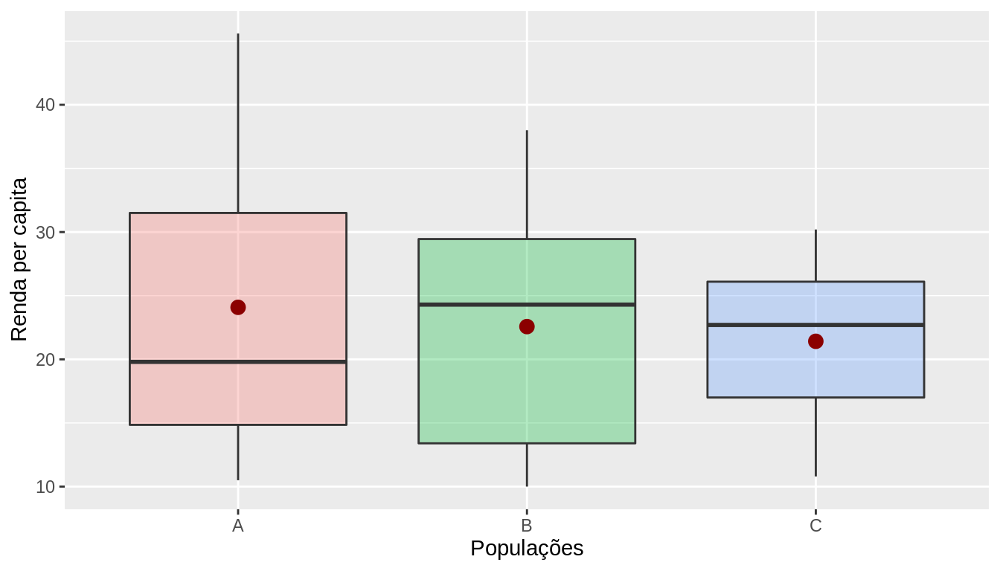
As séries temporais podem ser de natureza regular ou irregular.
As séries temporais regulares ou uniformes são aquelas que podem ser expressas sempre o mesmo intervalo de tempo (frequência).
As séries temporais irregulares ou não uniformes são aquelas em que as frequencias de tempo são diferentes ou apresentam dados ausentes (missing data). Algumas vezes pode-se transformar series em irregulares agregando ou interpolando os dados mensurados.
3.2 Hipóteses básicas do estudo das séries temporais
Há um sistema causal relacionando as variáveis no tempo;
Ao longo do tempo, o sistema influencia todos os dados sob análise, de modo regular e permanente;
Os dados históricos refletem a influência média de um conjunto de fatores.
Tais hipóteses se baseiam no pressuposto de que as relações apontadas pela experiência pregressa permitem prever o possível comportamento das variáveis sob análises, determinando se seu comportamento apresenta propriedades determinísticas e/ou aleatórias.
3.3 Classificação dos tipos de séries temporais
Contínuas: A informação é obtida em qualquer intervalo de tempo (podendo ser discretizando em intervalos iguais) ou é acumulada por período. Ex: Temperatura, pluviosidade, partículas em suspensão.
Discretas: Observações obtidas em intervalos de tempo discreto e equidistantes (ano, mês, dias, semanas epidemiológicas). Ex: Mortalidade infantil, notificações por DIC.
Multivariada: São várias coleções de observações para a mesma sequência de períodos de tempo, ou seja,envolvem mais de uma série histórica. Ex: Número de homicídios e acidentes no Sudeste.
Multidimensional: São várias coleções de observações para a mesma sequência de períodos de tempo, descrevendo o mesmo fenômeno em diferentes contextos. Ex: Número de AVCs em diversas UFs.
3.4 Processo Estocástico
Um processo estocástico pode ser pensado de duas formas:
um conjunto de possíveis trajetórias de um fenômeno físico que poderiam ser observadas;
um conjunto de variáveis aleatórias uma para cada tempo \(t\).
Cada valor observado de uma trajetória é um dos possíveis valores que poderiam ter sido observado, de acordo com a distribuição de probabilidades da respectiva variável aleatória.
Definir uma séries temporais consiste em determinar as funções matemáticas que apontam suas componentes básicas e permitem prever a evolução dos fenômenos estudados (como um eventual crescimento ou decrescimento futuro).
As séries temporais podem ser matemática mente representadas por funções do tipo:
\[Z_t = f(tempo, a)\]
Sendo \(Z_t\), o valor da variável \(Z\) no tempo \(t\) e \(a\) a componente aleatória associada à função matemática do tempo.
- Série com a mesma estrutura: cada série é uma possível realização do mesmo processo estocástico.

Trajetória ou série temporal ou função amostral
3.5 Notação e Nomenclatura
Matematicamente, uma série temporal discreta é representada por: \(Z_t = (Z_1 , Z_2 , Z_3 , ... , Z_n)\), sendo: \(Z\), a variável observável e \(t = 1,2,...,n\), o parâmetro do tempo.
Utilizando o exemplo óbitos por causa por local:

3.6 Objetivos: análise de séries temporais
| Objetivo | Exemplo |
|---|---|
| Descrição: verificar existência de tendência, sazonalidade, ciclos. Histogramas, boxplots, são ferramentas da análise exploratória descritiva | Identificar tendência da AIDS; sazonalidade da dengue visando estabelecer melhor período de intervenção. |
| Estabelecimento de causalidade: estudo da relação de causa-efeito | Vacina X sarampo; Mortalidade por DIC X melhor assistência |
| Classificação: identificação de padrões | A série de leishmaniose tegumentar é “igual” à visceral? |
| Controle: sistemas dinâmicos, caracterizados por uma entrada \(X_t\), uma série de saída \(Z_t\) e uma função de transferência \(V_t\) | Modelar a resposta a medidas de controle de epidemia |
| Monitoramento (nowcast): Detectar variações no comportamento da séries temporais conforme elas ocorram | Dosagem de Hormônios ou de sinais vitais em CTI |
| Predição (forecast) : prever o comportamento futuro de uma serie | Predição de epidemias, corrigir atraso de notificações |
3.7 Estacionariedade
- Uma série temporal é dita estacionária quando ela se desenvolve no tempo aleatoriamente ao redor de uma média constante e com uma variância constante, refletindo alguma forma de equilíbrio estável.

Na prática, a maioria das séries que encontramos apresentam algum tipo de não estacionariedade, por exemplo, tendência.
O modelo mais simples de uma séries temporal estacionária pode ser representado por:
\[Z_t = \mu + a_t\]
Sendo \(\mu\) a média do processo temporal e \(a_t\) a componente aleatória, chama de Ruído Branco em análises de séries temporais.
A estacionariedade da séries temporais pode ser:
1\(^a\) ordem - média constante ao longo de todo o período
2\(^a\) ordem - variância constante ao longo de todo o período
3.7.1 Função de Autocovariância de um processo estacionário
\[\gamma_h = E{\{[Z_t - E(Z_t)][Z_{t-h} - E(Z_{t-h})]\}}\]
A covariância não depende do tempo, mas da distância entre as observações.
Um processo é considerado fracamente estacionário se:
\(E(Z_t)=\mu\), \(\forall t\) (constante)
\(var(Z_t) = \sigma^2\), \(\forall t\) (constante)
\(Cov(Z_t, Z_{t-h}) = \gamma_h\), \(\forall t\) (não depende do instante no tempo, apenas da distância h)
Sendo o ruído branco (White Noise), também chamado de Processo Puramente Randômico, uma variável aleatória \(a_t\), com média zero e variância \(\sigma²_a\):
\(a_t \sim N(0, \sigma^2_a)\)
\(Cov(a_t, a_{t-h}) = 0\), \(\forall h \neq 0\) (Não correlacionados)
3.7.2 Porque a Estacionariedade é Importante ?
A maioria das técnicas estatísticas utilizadas em séries temporais supõe que estas sejam estacionárias, caso não a séries temporais não seja estacionária, será necessário transformar os dados originais se estes não formam uma série estacionária.
A transformação mais comum consiste em tomar diferenças sucessivas da série original, até se obter uma série estacionária.
A primeira diferença de \(Z_t\):
\[\bigtriangledown Z_t = Z_t - Z_{t-1}\]
A segunda diferença de \(Z_t\):
\[\bigtriangledown^{2} Z_t = \bigtriangledown[\Delta Z_t] = \bigtriangledown[Z_t - Z_{t-1}]\]
A n-ésima diferença de \(Z_t\):
\[\bigtriangledown^{n} Z_t = \bigtriangledown[\bigtriangledown^{n-1} Z_t]\]
Logaritmo dos dados - Estabilizar a variância
\[\bigtriangledown log Z_t = log Z_t - log Z_{t-1}\]
Transformações Box-Cox
Pode-se diferenciar tantas vezes quanto necessário até estabilizar (não + que duas diferenças);
Como saber se um processo é estacionário ?
Visualmente, através da decomposição
Testes Estatísticos, ex: Dickey-Fuller
3.8 Componentes de uma Série Temporal
Tendência
Sazonalidade
Ciclo
Aleatório (Erro)
Fonte: Minerva’s Data Lab, Cambridge, Reino Unido
3.9 Independência
Os métodos usuais de análise estatística de dados têm como pressuposto básico a independência dos eventos (casos). Ou seja, a ocorrência de um caso de doença em uma dada pessoa é independente da ocorrência em outra pessoa.
Pressupostos básicos para uma análise de regressão:
\(E(e_i) = 0\)
Variância \(\sigma^2\) constante (homocedasticidade);
\(e_i \sim N(0, \sigma^2)\)
\(e_i \neq e_j\), são independentes
Na análise da incidência de doenças (ou qualquer outro indicador ecológico) ao longo do tempo isso não é verdade: a incidência em um determinado dia/mês ou ano em geral é correlacionada com a ocorrência no dia/mês/ano anterior.
Esta correlação é expressa em uma função denominada função de autocorrelação.
3.10 Dependência
Quanto a dependência uma séries temporais pode possuir:
Independência (sem dependência serial): série puramente aleatória ou ruído branco;
Memória longa: a dependência desaparece lentamente (os valores de pontos no passado influenciam momentos muito adiante no tempo - exemplo: doenças com grande latência);
Memória curta: dependência desaparece rapidamente (doenças de alta infecciosidade e “explosivas”" - exemplo: gripe).
3.11 Função de Autocorrelação - FAC (em Inglês Autocorrelation function ACF )
O coeficiente de correlação entre \(Z_{t}\) e \(Z_{t-h}\) é chamado de autocorrelação de h-ésima ordem e é denotadado por:
\[ {\rho}_{k}=\frac {Cov\left({Z}_{t},{Z}_{t-h} \right)}{\sqrt{Var\left({Z}_{t},{Z}_{t-h} \right)}} =\frac{Cov\left({Z}_{t},{Z}_{t-h} \right)}{Var\left({Z}_{t} \right)} =\frac{{\gamma}_{k}}{{\gamma}_{0}} \]
Temos então:
\({\rho}_{0}=1\)
\(-1\leq {\rho}_{l} \leq 1\)
Um conjunto de autocorrelações, \(\left\{\rho_{h}\right\}\), é chamado de função de autocorrelação de \(Z_{t}\). Para uma dada amostra, \(\left\{Z_{t}\right\}_{t=1}^{T}\), suponha que \(\overline{Z}\) é a média amostral. Então, a autocorrelação amostral de primeira ordem de \(Z_{t}\) pode ser definida como:
\[ {\hat{\rho}}_{1}=\frac{\sum _{t=2}^{T}{\left({Z}_{t}-\overline{Z}\right) \left({Z}_{t-1}-\overline{Z}\right)}}{\sum_{t=1}^{T}{{\left({Z}_{t}-\overline{Z}\right)}^{2}}} \]
que é um estimador consistente de \({\rho}_{1}\). Em geral, a autocorrelação amostral de h-ésima ordem de \(Z_{t}\) pode ser definida como:
\[ {\hat{\rho}}_{h}=\frac{\sum_{t=h+1}^{T}{\left({Z}_{t}-\overline{Z}\right) \left({Z}_{t-h}-\overline{Z} \right)}}{\sum_{t=1}^{T}{{\left({Z}_{t}-\overline{Z}\right)}^{2}}} \] para \(0\leq h \leq T-1\).
Por exemplo, suponha que você está avaliando uma série temporal qualquer e quer visualizar como as defasagens da série podem impactar seu valor atual (ou seja, se \(Z_{t}\) é relacionado com \(Z_{t-h}\) para \(k\ge1\)). A função de autocorrelação pode ser usada para obter tal informação.
Num primeiro momento, visualize os dados da série para 10 lags (defasagens). Observe que os lags se tornam novas colunas e na medida que elas aumentam, incrementa-se as linhas sem observações.
Apesar da simples correlação entre os dados nos ajudar a identificar defasagens que poderíam contribuir para o comportamento da série em \(t\), precisamos fazer uso de testes estatísticos que verifiquem a significância da relação entre o valor atual e suas lags. Neste sentido, a função de autocorrelação tem grande importância.
Abaixo, um exemplo de função de autocorrelação. Observe que há duas linhas horizontais que representam os limites do teste de significância sendo que valores acima ou abaixo da linha são estatisticamente significantes. Neste documento, apresentaremos o teste que é realizado.

- O correlograma é uma das principais ferramentas de análise exploratória em séries temporais, pois indica como cada valor em um dado instante de tempo \(t\) se relaciona com os valores em \(t+1, t+2,...,t+j\)
Para um dado \(h\), os resultados da Função de Autocorrelação podem ser testados usando um teste que podem ser representados pelas seguintes hipóteses:
\[ \begin{aligned} && H_{0}: \rho_{h}=0 \\ && H_{1}: \rho_{h}\neq 0 \end{aligned} \]
3.12 Componentes de uma Série Temporal
- A séries temporais pode ser desmembrável em componentes sistemáticas (apontam movimentos regulares) e não sistemáticas (apontam movimentos irregulares).
São elas:
Componentes Sistemáticas (podem ou não estar presentes)
Tendência
Sazonalidade
Ciclo
Componentes Não Sistemáticas
- Aleatória ou Ruído Branco
As análises exploratórias de séries temporais buscam isolar e interpretar as componentes. Tais componentes podem atuar de maneira isolada ou inter-relacionadas.
3.13 Tendência
É a indicadora da direção global dos dados (ou movimento geral da variável), do percurso traçado e de sua linha contínua;
É o efeito de longo prazo na média. Pode ser o aumento ou redução a longo prazo…
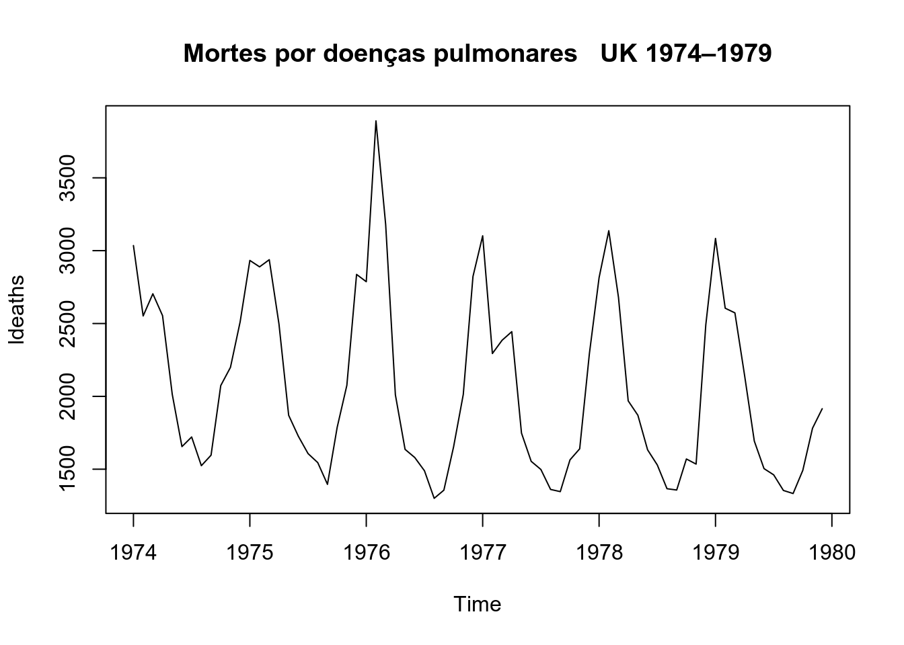
3.14 Sazonalidade
São ciclos de curto prazo (não maiores que um ano), em torno da tendência;
Costumam se referir a eventos ligados a estação do ano, vinculados ao calendário e geralmente repetidos a cada doze meses.
Efeitos ligados à variações periódicas (semanal, mensal, anual, etc.);
Padrões que ocorrem em intervalos fixos.
Ex: Medidas de Temperatura (aumenta no verão e diminui no inverno).

3.15 Ciclo
Os ciclos são oscilações (aproximadamente regulares) em torno da tendência. Podem dever-se a fenômenos naturais, socioculturais ou econômicos, como variações climáticas (ex: excesso ou falta de chuva pode produzir ciclos agrícolas)
Variações que apesar de periódicas não são associadas automaticamente a nenhuma medida do calendário;
Aumento ou redução de frequência sem intervalos fixos.
Ex: Ciclos Econômicos e Ciclos de epidemias.
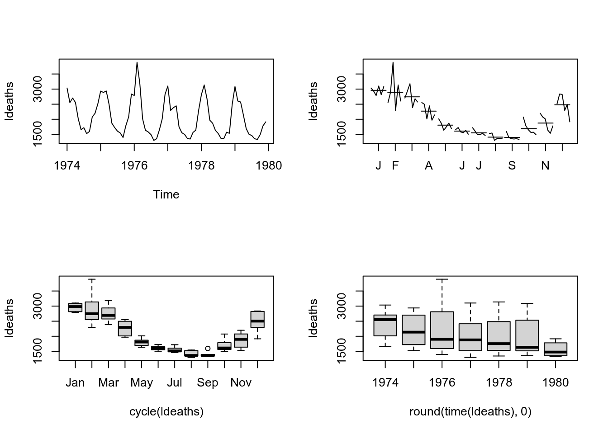
A diferença entre os ciclos, propriamente ditos, e a sazonalidade, é o período de avaliação (curto e longo);
A semelhança entre ambos, é que definem oscilações relativamente regulares em torno da tendência.
Na área de saúde é pouco comum encontrarmos ciclos, ainda que possam exitir.
3.15.1 Como detectar a sazonalidade ?
Visualmente
- Boxplots
- seasonplot
- monthplot
- decomposição

3.16 Termo Aleatório ou Ruído Branco
Conceitualmente, a componente aleatória é uma mistura de pertubações bruscas, irregulares e esporádicas nos movimentos das séries que tipificam os fenômenos. Na realidade é resultante dos efeitos de múltiplas causas.
Exemplos típicos de eventos aleatórios:
- Secas
- Enchentes
- Terremotos
- Epidemias
- Crise política
- Conflitos Socioeconomicos
3.17 Composição dos Modelos de uma séries temporais
- A série pode ser descrita como sendo a soma dos componentes (tendência, sazonalidade, ciclicidade e termo aleatório).
3.17.1 Modelo Aditivo
\[Z_t = T_t + S_t + C_t + a_t\]
sendo \(t = 1,2, ..., N\)
- Essa composição de modelo sugere que a variação sazonal parece constante, não muda quando da série temporal aumenta.
3.17.2 Modelo Multiplicativo
\[Z_t = T_t . S_t . a_t\]
- Essa composição de modelo sugere que a sazonalidade varia em conjunto com a tendência (aumenta de amplitude quando aumenta a tendência).
- Pode ser transformado em aditivo usando \(log\).
\[log(Z_t) = log(T_t . S_t . a_t) = log(T_t) + log(S_t) + log(a_t)\]
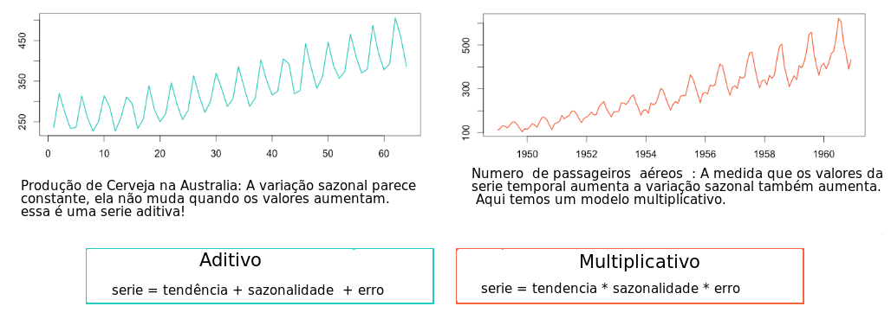
3.18 Decomposição de um séries temporais

3.19 Prática no R
3.19.1 A biblioteca ts é a mais utilizada no R
na biblioteca ts a função mais utilizada tem o mesmo nome ts , não é necessário chamar library(ts) pois a mesma já se encontra carregada por default.
a função ts tem como argumentos principais:
data: um vetor, data.frame ou matriz com dados para a série
start: tempo da primeira observação e/ou end: tempo da última observação
frequency: quantidade de observações por unidade de tempo, podendo representar: Anual = 1, Trimestral = 4, Mensal = 12 e Semanal = 52
3.19.2 Simulando uma Série Temporal
vamos simular uma série usando a função rnorm para gerar 60 pontos aleatórios , com media 0 e desvio 1 em seguida vamos usar a função ts para transformar o vetor em uma objeto ts e finalmente fazer um gráfico.
# Uma serie temporal normalmente distribuida
serie <- rnorm(60)
# usando a função ts para criar um objeto da classe ts
# pode-se usar tambem end=c(2016,12) mas basta um!
serie.ts <- ts(serie,start = c(2012,1), frequency=12) vamos observar agora como é um objeto do tipo ts
Jan Feb Mar Apr May Jun Jul Aug Sep Oct Nov Dec
2012 -0.850789274 1.098551160 -1.206355025 0.581862276 0.863689895 0.983052004 -1.271260251 -0.001062756 -0.960910158 1.259209306 -0.866606890 0.249044190
2013 -0.086168223 -0.492884341 -0.268998914 -0.399240236 -0.944297510 1.013188332 -0.408704068 -0.181086790 1.183755855 -1.608494491 -2.272439862 -2.040607916
2014 -0.648006354 0.717722237 -0.103400012 0.327017362 -0.977597331 0.341442983 0.043822392 -1.021578363 0.793427719 0.501624458 -1.554470354 0.883497837
2015 -0.207767801 1.831374014 0.177264382 -0.805840648 1.947932470 0.121197052 -0.354949127 1.052866250 1.163113962 -0.798832818 0.775455294 -1.995007352
2016 -0.350562193 0.380864742 0.258213780 0.964510263 -0.491278153 0.081638756 -0.161770723 1.272817069 -0.720269271 1.541051559 0.853661550 0.802399491para se obter o gráfico basta usar a função plot

3.19.3 Importando uma vetor e transformando em Série Temporal
vamos usar agora um exemplo de casos caxumba em Nova York de 1928-1972 proveniente do livro
Yorke, J.A. and London, W.P. (1973) “Recurrent Outbreaks of Measles, Chickenpox and Mumps”, American Journal of Epidemiology, Vol. 98, pp.469
observe que a partir de um dado puramente vetorial já podemos obter um objeto ts
clique aqui para ver como são os dados brutos
para ler os dados utilizaremos a função scan que importa dados vetoriais. Nesse exemplo estaremos usando os dados diretos de uma URL mas o dado poderia estar no seu disco, assim você importaria localmente!
OBSERVAÇÃO:
No Windows existe algum problema ao acessar sites seguros (HTTPS)
assim vamos definir uma função que permita o acesso a esse tipo de site.
podemos tentar duas coisas options(url.method="libcurl")
ou criar uma função
scan.win <- function(x) {scan(url(x,method = 'libcurl'))}Exemplo com dados de Caxumba, não se esqueça de definir a função acima!

3.19.4 Utilizando dados da Incidência de dengue nas Filipinas, 2008 - 2016
Colocando em formato de Série temporal utilizando a biblioteca ts do R.
# Convertendo os dados para o formato de Séries Temporais
# A frequency=12 foi especificado pois queremos mostrar dos dados mensais
# dengue_original=read.csv("denguecases2.csv")
denguecasests <- ts(dengue_original$Dengue_Cases,start=c(2008,1),frequency=12)
plot(denguecasests, ylab="Casos de Dengue", xlab="Tempo")
Verificando e testando a autocorrelação dos casos de dengue.
\[ \begin{aligned} && H_{0}: \rho_{h}=0 \\ && H_{1}: \rho_{h}\neq 0 \end{aligned} \]
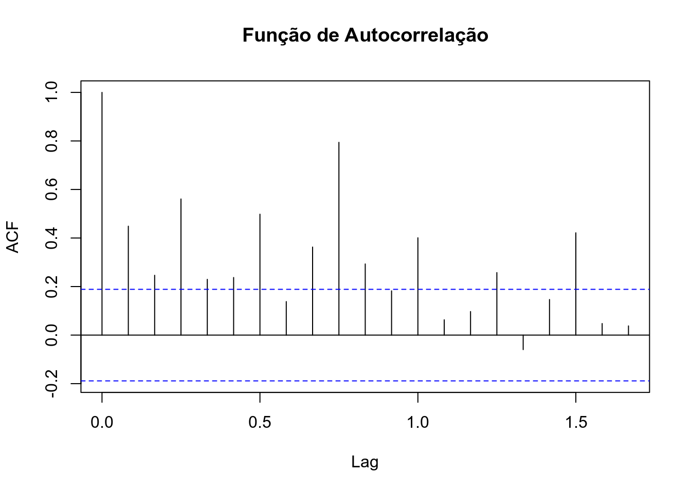
Box-Ljung testdata: denguecasests X-squared = 171.88, df = 20, p-value < 2.2e-16
Através do gráfico e do teste do ACF, é possível verificar que os a incidência de dengue é altamente correlacionada ao longo do tempo.
- Fazendo uma análise descritiva da série temporal.
Jan Feb Mar Apr May Jun Jul Aug Sep Oct Nov Dec
2008 131.13331 159.97741 93.65630 49.38712 79.85915 152.63940 210.24223 115.13416 129.20466 36.17346 58.74152 307.65474
2009 98.15255 39.54446 171.74569 96.47914 87.96879 40.66555 215.76350 190.36630 124.03703 95.37771 70.55726 85.84889
2010 33.54686 90.16454 138.44613 95.59756 81.62430 55.22568 60.04658 174.13877 32.44285 71.39315 74.17619 135.63883
2011 58.76998 88.23193 184.88198 46.52083 33.66412 109.27259 187.12547 93.34766 134.83900 91.05780 53.87635 143.89752
2012 162.21779 128.88087 607.49949 251.27249 114.48472 75.88479 276.13014 400.20592 191.47219 421.72803 239.40052 423.70277
2013 75.91858 448.67952 696.56174 374.95060 244.44260 387.48040 678.00967 530.46735 132.94225 530.61714 303.43820 515.58071
2014 249.49254 509.79051 226.41755 113.67882 56.28797 237.79033 366.61897 522.16422 326.64717 87.44494 41.43502 469.48018
2015 212.50300 60.95752 160.61858 255.93445 134.40762 33.81837 331.08272 243.46980 485.76066 210.63816 104.00878 121.16441
2016 18.94775 145.36292 194.46347 362.34941 201.73756 70.58666 57.41445 270.55192 57.02598 245.19665 119.08265 116.41069vamos verificar a propriedades da serie:
| Estatística | Comando R | Valor |
|---|---|---|
| Comprimento da Serie | length() | 108 |
| media | mean() | 192.0458131 |
| mediana | median() | 134.62331 |
| máximo | max() | 696.56174 |
| minimo | min() | 18.947748 |
| frequência | frequency() | 12 |
| período de inicio | start() | 2008, 1 |
| período de fim | end() | 2016, 12 |
|
pode-se pedir também o sumario da serie!
Min. 1st Qu. Median Mean 3rd Qu. Max.
18.95 81.18 134.62 192.05 246.27 696.56 

Mudando a janela de tempo da série temporal. Observando apenas os dados de Jan 2010 até Dez de 2012.
denguecasests2 <- window(denguecasests, start=c(2010,1),end=c(2012,12),frequency=12)
plot(denguecasests2, ylab="Casos de Dengue", xlab="Tempo")
Decompondo a séries temporais dos casos de dengue via o método clássico decompose (Decomposição via Médias Móveis)
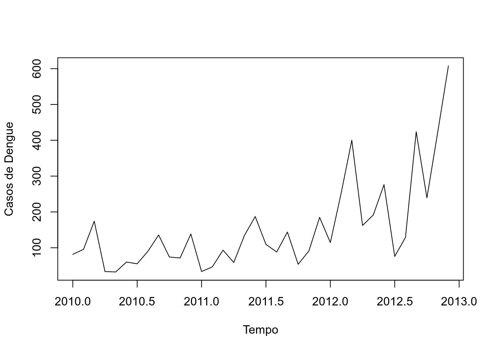
Decompondo a séries temporais dos casos de dengue via STL (Seasonal and Trend decomposition using Loess)
- É mais robusta, é mais sensível a vários tipos de sazonalidade e lida melhor com os outliers.

seasonal trend remainder
Jan 2008 -61.728316 127.2111 65.65057
Feb 2008 -3.857297 126.4055 37.42925
Mar 2008 99.537062 125.5998 -131.48061
Apr 2008 -30.319394 124.7942 -45.08772
May 2008 -76.786911 123.8962 32.74986
Jun 2008 -49.643626 122.9982 79.28485
Trend <- decom_dengue$time.series[,2]
Seasonal <- decom_dengue$time.series[,1]
Random <- decom_dengue$time.series[,3]Refazendo o sinal original da séries temporais através das componentes.
recomposed_dengue <- Trend+Seasonal+Random
par(mfrow=c(1,2))
plot(denguecasests, ylab="Incidência Dengue", main="Original")
plot(as.ts(recomposed_dengue), ylab="Incidência Dengue", main="Recomposta")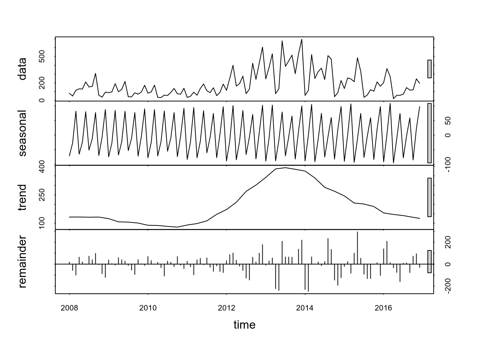
Em algumas séries temporais não é fácil avaliar suas componentes de maneira visual, ou seja, de maneira gráfica. Para podemos avaliar melhor precisamos utilizar alguns testes estatísticos que possibilitem tal avaliação.
Outra forma através do ggplot

3.19.5 Avaliando a Estacionariedade da séries temporais
Segundo o teste de Dickey-Fuller:
\(H_{0}\): A séries temporais não é Estacionária
\(H_{1}\): A séries temporais é Estacionária
Alguns exemplos:
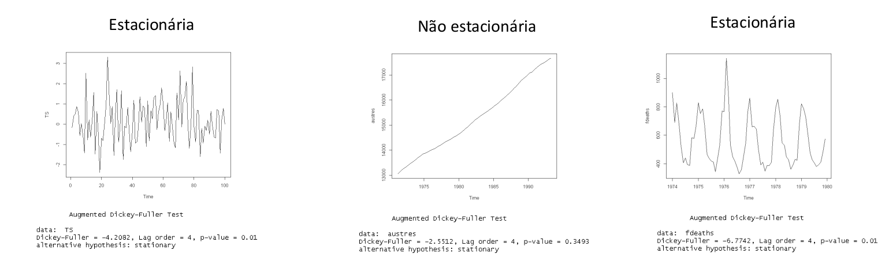
Testando a estacionariedade da série dos casos de dengue:
Augmented Dickey-Fuller Testdata: denguecasests Dickey-Fuller = -2.0782, Lag order = 4, p-value = 0.5442 alternative hypothesis: stationary
Como p-valor = 0,5442, não rejeitamos a hipótese nula, ou seja, não há indícios da séries temporais ser estacionária.
3.19.6 Avaliando a tendência em uma séries temporais
Construindo uma reta baseado no modelo de regressão linear simples para verificar tendência da incidência da dengue.
plot(denguecasests, main = "Incidência de Dengue 20080 and 2016")
abline(reg=lm(denguecasests ~ time(denguecasests)), col = "red")## plotting the trend line of linear regression
Construindo uma curva suavizada baseada na função lowess para verificar tendência da incidência da dengue.
plot(denguecasests, ylab="Casos de Dengue", xlab="Tempo")
library(Kendall)
lines(lowess(time(denguecasests),denguecasests),lwd=3, col=2)
Uma outra forma de mostrar a tendência da séries temporais, fazendo a média anual. Observe que a curva se parece um pouco com a curva do loess porém menos suave.
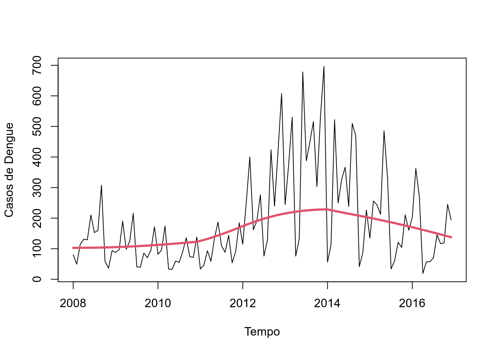
3.19.7 Avaliando a Sazonalidade da séries temporais
De maneira visual podemos utilizar algumas técnicas gráficas, tais como:
Boxplot
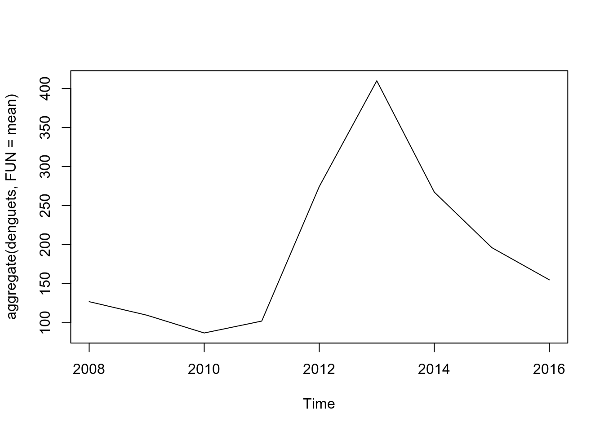
Monthplot

Seasonplot (funçao disponibilizada pela library forecast)
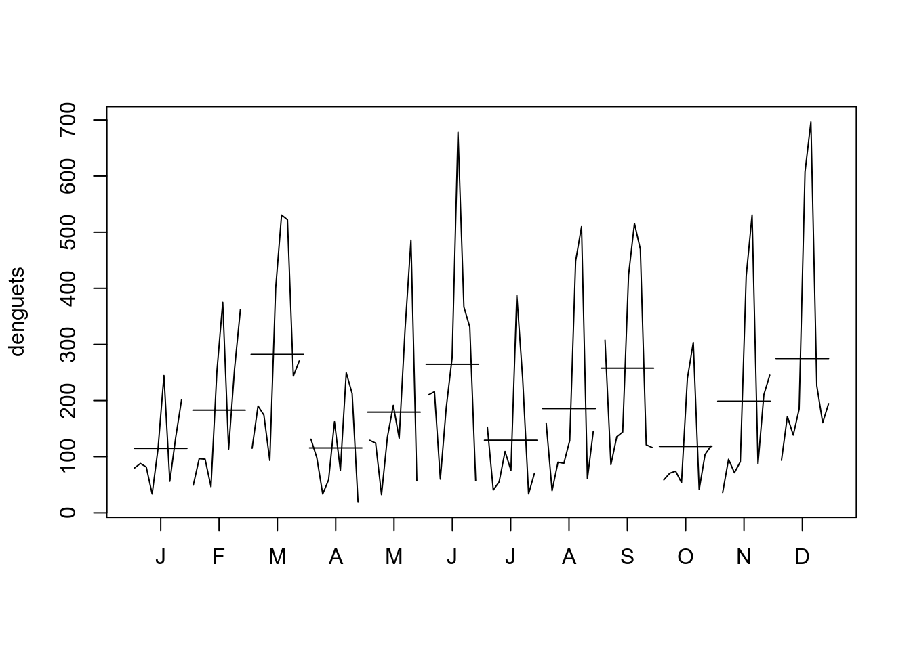
3.20 Exercícios Propostos
Utilizando os bancos:
Série mensal de óbitos por doenças respiratória na região Sul do Brasil de 1996 a 2017
pode ser acessado na URL (https://bit.ly/2P4CJj4) fonte: DataSUS/MSSérie semanal do numero de casos Malaria nos EUA de 1974 a 1984
pode ser acessado na URL (https://bit.ly/2KMXsCC) fonte:CDC/US
Importe a série para um formato ts e faça:
Uma análise exploratórias dos dados em formato séries temporais;
Decomponha a séries temporais;
Através de análises gráficas e/ou testes estatísticos, avalie e verifique a existência de cada componente.
3.21 Material on line sobre Séries Temporais
Time Series Task View:
https://cran.r-project.org/web/views/TimeSeries.html
Blog, Ebook and Forecast Documentation by Rob Hyndman:
https://otexts.org/fpp2/intro.html
Extracting Seasonality and Trend from Data: Decomposition Using R
https://anomaly.io/seasonal-trend-decomposition-in-r/index.html
STL: A seasonal-trend decomposition procedure based on loess
Stackoverflow Community:
3.22 Bibliografia sugerida
DIGGLE, Peter. Time Series: A Biostatistical Introduction (Oxford Statistical Science Series, No. 5) 1st Edition, 1996
FERREIRA, Pedro Guilherme Costa. Análise de Séries Temporais em R: curso introdutório. 2018.
METCALFE, Andrew V.; COWPERTWAIT, Paul SP. Introductory time series with R. Springer-Verlag New York, 2009.
MORETTIN, Pedro A.; TOLOI, Clélia M.C. Análise de Séries Temporais: Modelos Lineares Univariados. Bluscher - ABE - Projeto Fisher. Edição 3, 2018.
WOODWARD, Wayne A.; GRAY, Henry L.; ELLIOTT, Alan C. Applied time series analysis with R. CRC press, 2017.